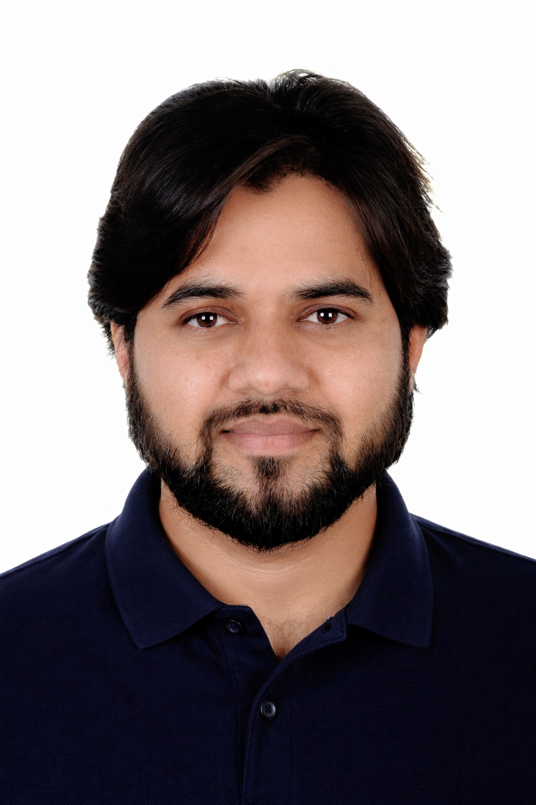
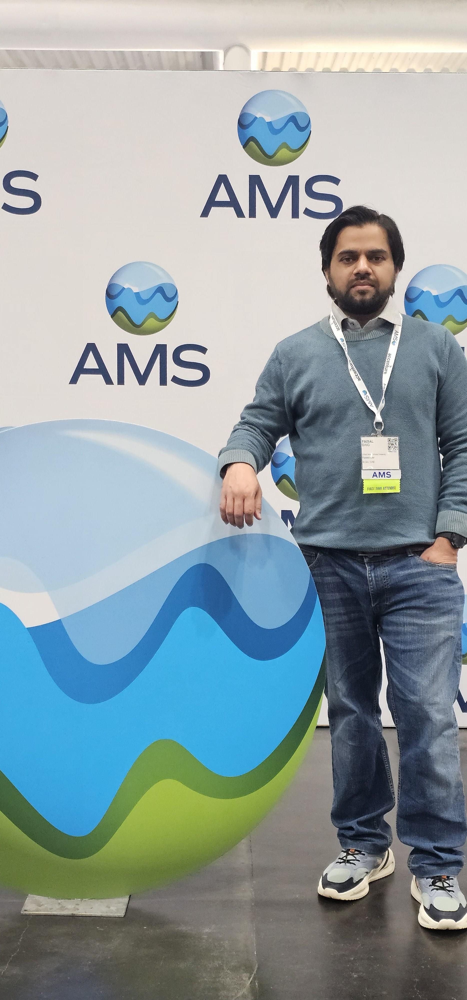
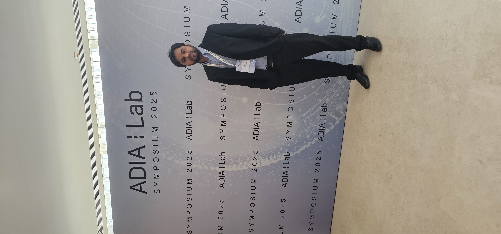
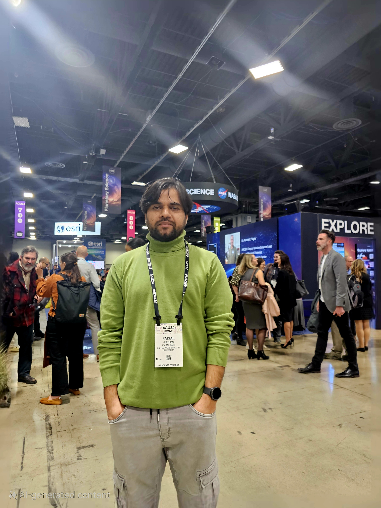
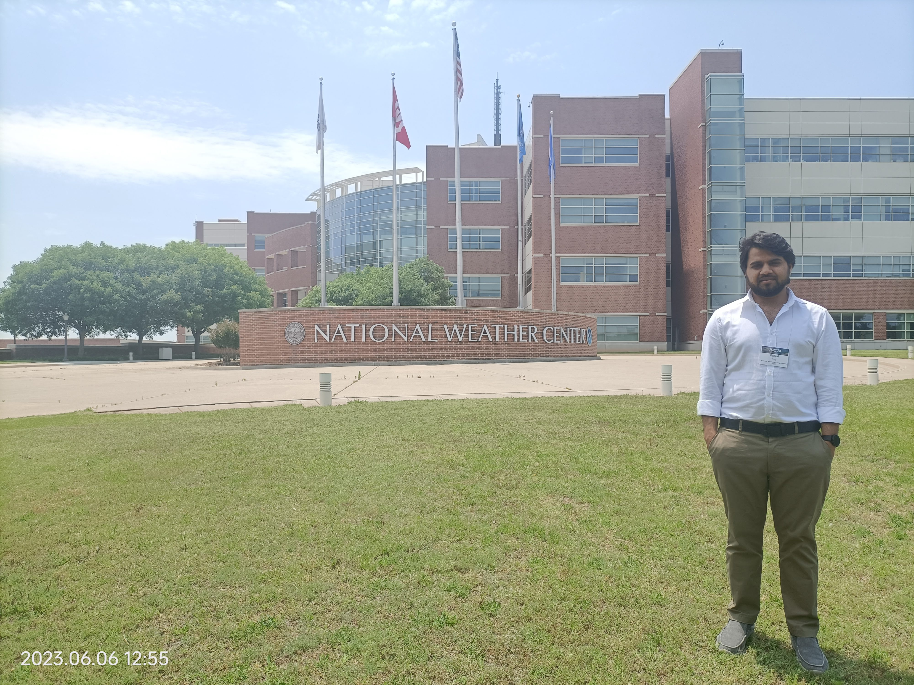
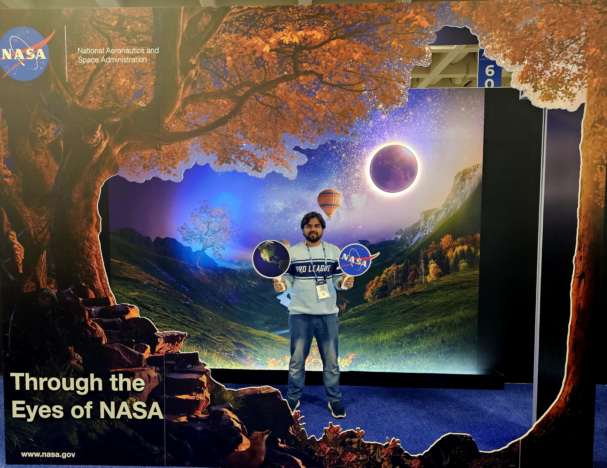
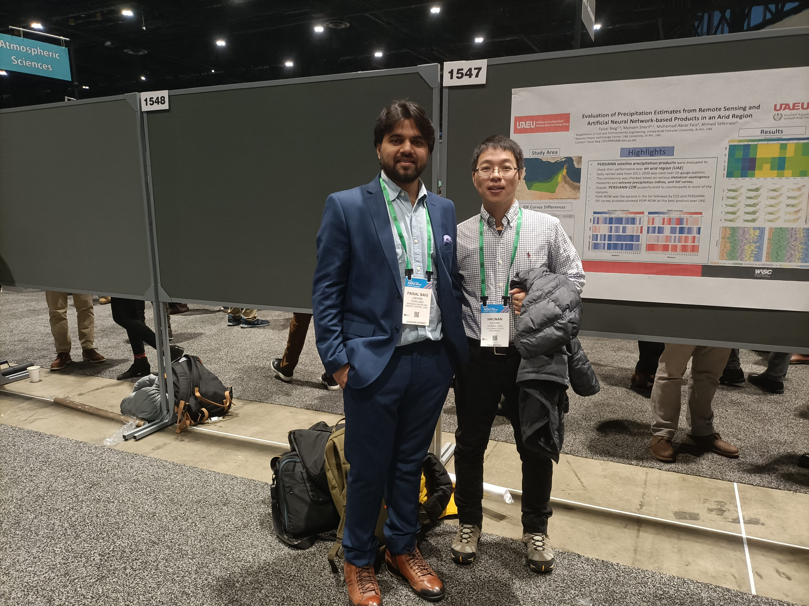
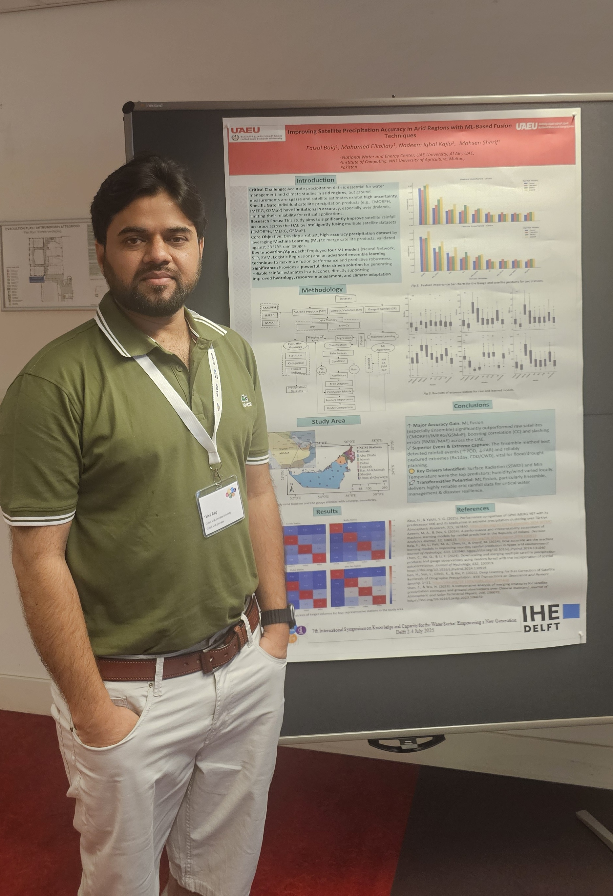

Postdoctoral Researcher · UAE Golden Visa Holder · Al Ain, UAE
My research centres on improving the reliability of rainfall information in data-scarce regions through satellite precipitation analysis, bias correction, and the application of climate models — with a particular focus on hydrological decision-making in arid and semi-arid environments.

Background
I am a water resources researcher holding a PhD in Water Resources Engineering from UAE University, with a research trajectory built around improving the accuracy and reliability of rainfall information in regions where data scarcity is itself a fundamental scientific challenge. My work sits at the intersection of hydrology, remote sensing, and machine learning — areas I have pursued both independently and through funded collaboration with institutions including UC Irvine and Texas A&M University.
As a Postdoctoral Researcher at the Desert Environment Research Center, UAE University, I lead projects including developing high-resolution gridded precipitation data for arid regions, climate impact assessment using climate models, water conservation practices using remote sensing data and advances sensors, flood risk analysis and hydrological modeling in arid regions. I have also contributed to flood risk modelling consultations, rain enhancement research proposals for the UAE's National Center of Meteorology, and multi-stakeholder watershed studies across the Emirates.
Prior to my current role, I serves as a postdoctoral researcher at National Water and Energy Center of UAE university where I played a key role in many national consultancy and research projects involving surfacewater modeling, flood modeling for Fujairah catchment, timeseries analysis and climate change impacts on water resources. Besides, I have over a decade long experience at Bahauddin Zakariya University in Pakistan teaching engineering courses such as water management for agriculture, irrigation engineering, catchment modeling, fluid mechanics, open channel hydraulics, water conservation practices etc. and supervising graduate research. I also served as a visiting researcher at Colorado State University and Istanbul Technical University, which strengthened my grounding in deep learning for atmospheric analysis and hydrological modelling under changing climate conditions.
Peer-Reviewed Work
Humanitarian Blind Spots in Western Climate Change Policy and Discourse
Qamar, M.U., Faisal Baig* — Nature Climate Change (2026)
doi.org/10.1038/s41558-026-02613-0Enhancing Satellite-Based Rainfall Estimation in Arid Regions Through AI-Driven Data Fusion
Elkollaly, M., Faisal Baig*, Kajla, N.I., Faiz, M.A., Chen, H., Sherif, M. — Journal of Big Data (2026)
Benchmarking MSWEP Precipitation Accuracy in Arid Zones Against Traditional and Satellite Measurements
Abdelrazaq, A.S., Alnuaimi, H.A., Faisal Baig*, et al. — Remote Sensing 18(1), 95 (2025)
Harnessing Satellite Precision: Flash Flood Vulnerability Mapping in Arid Wadis
Elkollaly, M., Sefelnasr, A., Faisal Baig, et al. — Natural Hazards 121(11), 12767–12793 (2025)
Flood Risk Susceptibility Analysis in Larkana District, Pakistan Using Multi-Criteria Decision Analysis and Geospatial Techniques
Khoso, W.A., Waseem, M., Tanoli, M.A., Faisal Baig* — Scientific Reports 15(1), 13633 (2025)
Synergies and Struggles: Water Security and Climate Action in South Asia's Quest for SDG 6 and SDG 13
Faisal Baig, Kassem, A., Zishan, Md., et al. — Gondwana Research (August 2025)
doi.org/10.1016/j.gr.2025.07.022From Bias to Accuracy: Transforming Satellite Precipitation Data in Arid Regions with Machine Learning and Topographical Insights
Faisal Baig, Ali, L., Faiz, M.A., Chen, H., Sherif, M. — Journal of Hydrology (2025): 132801
doi.org/10.1016/j.jhydrol.2025.132801Effect of Different Likelihood Measures on Parameter Conditioning and Model Uncertainty
Faisal Baig, Demirel, M.C., Taseer, M.Y.R., Kassem, A., Sherif, M. — Stochastic Environmental Research and Risk Assessment (2025)
How Accurate Are Machine Learning Models in Improving Monthly Rainfall Prediction in Hyper Arid Environments?
Faisal Baig, Ali, L., Faiz, M.A., Chen, H., Sherif, M. — Journal of Hydrology Vol. 633, 131040 (2024)
doi.org/10.1016/j.jhydrol.2024.131040Evaluation of Precipitation Estimates from Remote Sensing and ANN-Based Products (PERSIANN Family) in an Arid Region
Faisal Baig, Faiz, M.A., Chen, H., Sherif, M. — Remote Sensing 15(4), 1078 (2023)
Rainfall Consistency, Variability, and Concentration Over the UAE: Satellite Precipitation Products vs. Rain Gauge Observations
Faisal Baig, Faiz, M.A., Chen, H., Sherif, M. — Remote Sensing 14(22), 5827 (2022)
Gulf Cooperation Council Countries' Water and Climate Research to Strengthen UN's SDGs 6 and 13
Sherif, M., Abrar, M., Faisal Baig, Kabeer, S. — Heliyon 9(3) (2023)
Quantification of Precipitation and Evapotranspiration Uncertainty in Rainfall-Runoff Modelling
Faisal Baig, Sherif, M., Faiz, M.A. — Hydrology 9(3), 51 (2022)
Full list on Google Scholar.
Funded & Active Research
UAE Gridded Rainfall Dataset
Lead investigator on a 400,000 AED nationally funded project developing GCM-driven gridded precipitation data for climate change impact assessment, integrating IMERG, CMORPH, and GSMaP with atmospheric parameters.
UAE Rain Enhancement — NCM
Proposed cloud seeding and precipitation monitoring project to the National Center of Meteorology, advancing forecast reliability for the UAE Rain Enhancement Program.
Atmospheric Rivers Detection — WRF
ML-enhanced framework for detecting and forecasting atmospheric rivers and extreme precipitation events over the Arabian Peninsula using the WRF mesoscale model.
Rain Enhancement — 6th Cycle
Multi-institutional team (UAEU, UC Irvine, Texas A&M) preproposal for the UAE Research Program for Rain Enhancement Science 6th Cycle.
Urban Flood Risk Modelling
Expert consultation on urban flood risk modelling with international firms including ELARD, applying HEC-HMS, HEC-RAS, SWMM, and NAM.
Sustainability Journal — Co-Editor
Co-editing a special issue in the Sustainability journal, curating contributions at the intersection of water resources, climate resilience, and SDGs.
Academic Experience
My teaching spans over 10 years across undergraduate and graduate levels. At Bahauddin Zakariya University in Pakistan, I taught core engineering subjects, designed OBE-aligned curricula, and supervised multiple MSc theses. At UAE University, I served as Teaching Assistant across several civil engineering courses and mentored undergraduate interns — several of whom produced peer-reviewed journal publications as a direct outcome.
I hold a one-year Teaching Diploma from UAE University's Teaching Academy Program, where I trained in modern pedagogical methods, outcome-based education, and curriculum design.
International Presence
conf-agu2024.jpg) with your actual image filenames. Photos display automatically once the filenames match.

2026
2025
2024
2023
2023
2022
2022Curriculum Vitae
My CV provides a full account of my academic background, publications, funded research projects, teaching record, conference presentations, peer review service, and professional affiliations. I am currently open to Assistant Professor positions and research collaborations in hydrology, climate modelling, and earth sciences.
Reach Out
I welcome collaboration inquiries, academic discussions, and opportunities in research, teaching, or joint grant proposals — particularly in satellite hydrology, climate modelling, and water security in arid environments.